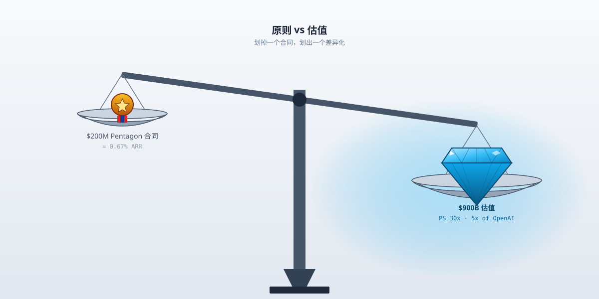
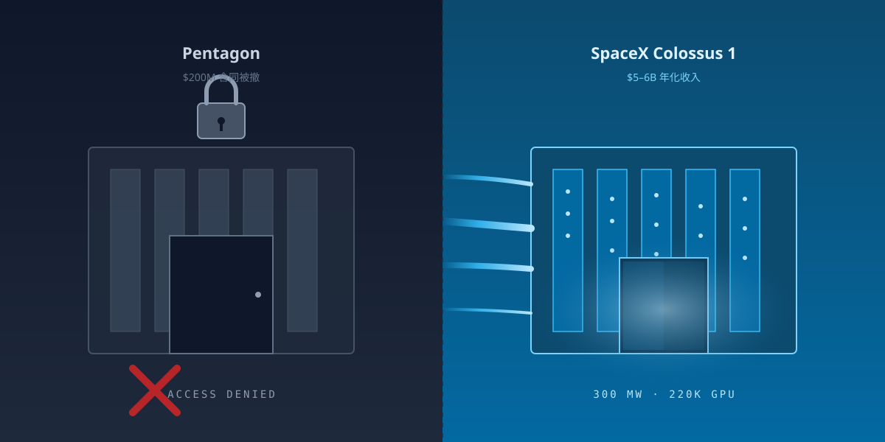

两件相反的事
2026年5月1日，美国国防部公布了8家AI公司的涉密网络合同，覆盖Impact Level 6（秘密级数据）和Impact Level 7（最高涉密级别）两类环境。
中标名单：SpaceX、OpenAI、Google、Nvidia、Reflection AI、Microsoft、Oracle、AWS。
Anthropic不在里面。
不是没投标，是直接被五角大楼定性为"supply chain risk"——供应链风险。这个标签历史上只贴过涉及外国敌对势力的公司，没贴过美国本土AI公司。Anthropic创了纪录。
5天之后，2026年5月6日，Anthropic在自家开发者大会"Code with Claude"上宣布：拿下马斯克SpaceX旗下Colossus 1数据中心的全部算力。300兆瓦电力，220,000张Nvidia H100/H200/GB200 GPU，1个月内交付。
这笔合同给SpaceXAI带来的年化收入大约$5-6B。
同一家公司，5天，先被一家叫"战争部"的拒之门外，再被一家把火箭送上天的接进自家心脏。
如果你只听第一件，你会以为Anthropic完蛋了。如果你只听第二件，你会以为Anthropic赢麻了。两件事放一起，画面就变了——一家AI公司，把"我不做某些生意"做成了"我做的生意更值钱"。
5月初，Anthropic的ARR冲到了300亿美元。年初这个数字还是90亿。4个月翻3倍多。
300亿ARR里，那个被五角大楼撕掉的合同值$200M——0.67%。
这不是丢了个客户的故事。这是一家公司用0.67%的收入买了一个叫"安全"的标签，然后把这个标签卖出了900亿估值的故事。

二亿美元
事情得从2025年说起。
那时候Anthropic和五角大楼有一份$200M的合同，给国防部提供Claude。合同里有两条特殊的限制条款：不能用于"完全自主武器系统"，也不能用于"对美国公民的大规模监控"。这两条来自Anthropic的usage policy（使用条款），从公司成立第一天就在。
2026年2月，新任战争部长Pete Hegseth要求Anthropic拿掉这两条。理由是国防部需要把模型用于"所有合法用途"。
Anthropic CEO Dario Amodei没让。
2月24日，CNN曝出Pentagon威胁要把Anthropic变成"行业贱民"。2月26日，Amodei公开回应："Pentagon的威胁不会改变我们的立场。"
理由分两层。
技术层，Amodei说得很硬："前沿AI系统目前的可靠性根本撑不起完全自主武器。" 他原话是"frontier AI systems are simply not reliable enough to power fully autonomous weapons"。他还补了一句"在缺乏适当监督的情况下，完全自主武器无法像我们训练有素的专业士兵那样做出关键判断"。
价值层，他也说得很硬："用这些系统进行大规模国内监控，与民主价值观不兼容。" 原话是"using these systems for mass domestic surveillance is incompatible with democratic values"。
2月27日下午5:01，Hegseth给的最终deadline过期。Anthropic没让步。当天，特朗普签字，要求所有联邦机构停用Anthropic产品，部分机构给6个月过渡期。Hegseth把Anthropic挂上"supply chain risk"，并发X贴文："即时生效，任何与五角大楼有业务的承包商、供应商、合作伙伴，都不得与该公司进行任何商业活动。"
更狠的是骂人——Fortune报道，五角大楼一位高官（CTO Emil Michael）直接管Amodei叫"liar"，还说他有"God complex"，上帝情结。
3月9日，Anthropic起诉特朗普政府。3月26日，加州北区联邦法官Rita F. Lin签发临时禁令，把"supply chain risk"标签和特朗普的禁用令一起冻结。
法官的措辞不客气：这次行政认定"在法律上和合理性上都站不住，属于任意而专横（arbitrary and capricious）"，并指出是"基于Anthropic言论的报复性行为，违反第一修正案"。
到5月1日五角大楼公布8家中标名单这一刻，Anthropic的处境是：合同没了，但行政标签被法院冻了，公司还在告政府。
这段戏看起来是Anthropic"为原则牺牲了商业"。数字不答应。
Anthropic 2026年初ARR是90亿，2月14B，3月19B，4月30B。300亿。
200M在300亿里，是小数点后两位的0.67%。
这种"骨头"，吃下去和吐出来，对Anthropic不是商业问题，是品牌问题。
而Anthropic把这个"品牌问题"答得很漂亮——告政府、赢禁令、上Wall Street、推Claude Opus 4.7。
5月5日，五角大楼公布中标名单的前一天，Anthropic在金融服务领域上线了一整套预制agent，宣布与摩根大通、高盛、Moody's深度合作，并发布Claude Opus 4.7——主打金融场景的最强模型。SWE-Bench Pro上64.3%，目前业内最高。
5月1日丢掉一个2亿美元的政府客户。5月5日宣布拿下华尔街最挑剔的几家。中间隔4天。
钢铁直男坚持的"原则"，本质是富人才负担得起的爱好——而Anthropic是富人。
邪恶探测器
把镜头切到Elon Musk。
2026年2月，Anthropic和五角大楼撕破脸那一阵，Musk在X上发过一连串骂Anthropic的帖子。
他给Anthropic起了个外号叫"Misanthropic"——把"Anth"换成"Misanth"，意思是"厌世"。他说Anthropic"hates Western Civilization"（仇视西方文明），还预测这家公司"doomed to become the opposite of its name"（注定走向公司名的反面）。Anthropic的词根来自"以人为本"，他的意思是这家公司会走向"反人类"。
按这个调子，Musk这辈子不会跟Anthropic做生意。
5月6日，他做了。
具体安排是：SpaceX旗下Colossus 1数据中心（位于田纳西州Memphis）的300MW电力、220,000张GPU，全部让给Anthropic用。SpaceX自己的xAI团队，搬去隔壁刚建的Colossus 2。这意味着马斯克自家的Grok往后用次一档的硬件，Anthropic的Claude用最好的。
订单金额估计每年$5-6B，是SpaceXAI（xAI和SpaceX合并后的实体）的主要收入来源之一。
Musk被记者问："你不是说Anthropic'邪恶'吗？"
他原话回复："我跟Anthropic高层开了一周的会，没有人触发我的邪恶探测器。" 英文是"No one set off my evil detector."
这句话信息量很大。它的潜台词是：Anthropic确实没变，三个月前是这家公司，现在还是这家公司。变的是我。
变是因为什么？
Bloomberg和Tom's Hardware的报道里给了一组数字。SpaceX预计未来几个月走IPO路演，目标估值$1.75万亿到$2万亿。Colossus 1每年300MW算力如果出租出去，能给SpaceX带来几十亿美元的稳定订阅收入。这是IPO之前最好看的财务故事。
而xAI自家的Grok 4，在主要模型评测榜上掉到了第四第五。继续把Colossus 1留给Grok，是把IPO招股书写难看；把它租给Anthropic，是把招股书写漂亮。
所以"邪恶探测器"的实际工作原理很朴素——它的灵敏度，跟检测对象口袋里的钱成反比。50亿美元一年的客户，再"misanthropic"，闻起来也是好闻的。
更黑色幽默的是后半段。CNBC报道里特别提了一句：Anthropic除了租算力，还对"轨道数据中心"表达了兴趣——也就是把数据中心送上太空，由SpaceX发射。
地球上嫌排放、Memphis嫌耗水的Colossus 1，下一步要去近地轨道。
一家以"AI安全"立身的公司，去找一家想把GPU装在猎鹰9号上的公司谈轨道算力。
谁还在意"邪恶探测器"。
生意化的安全
把上面两件事翻译成生意逻辑。
Anthropic做的不是道德选择题，是产品定位。
它把usage policy的禁令——不许做完全自主武器、不许做大规模监控——明明白白写出来，挂在主页，刻在合同里。这两条划线，划掉的客户其实不多：搞自主武器的国家级买家，全世界数得过来。划线划掉的，更多是这两个特定用例本身。
但划线带来的东西很多。
划线带来"我们和别人不一样"的清晰差异化。OpenAI、Google、xAI、Meta，没有一家公开承诺过类似的限制。OpenAI的usage policy里"不得开发武器"那句话，每隔几个月就被悄悄调整一次措辞——2024年那次甚至直接删了"military and warfare"分类。Anthropic反着来：把限制做得更具体、更窄、更可执行，然后把它当卖点。
差异化带来定价权。Anthropic 2026年Q1的企业客户里，三家最大的客户行业是金融、医疗、法律——三个对"模型出事的后果"最敏感的行业。摩根大通选Claude不是因为Claude最便宜，是因为合规部门看Anthropic的usage policy觉得"这家能签"。Novo Nordisk选Claude做药物发现和供应链，逻辑一样。
定价权带来估值。Anthropic 2025年底Series G融资估值$3800亿，对应当时$90亿ARR，PS（市销率）约42倍。2026年4月有消息说Anthropic在谈$500亿新一轮、估值$9000亿，对应$300亿ARR，PS 30倍。OpenAI最新一轮$1220亿融资估值$8520亿，对应$1200亿ARR，PS 7倍。
同样是"全球最大AI公司之一"，Anthropic的市销率比OpenAI高一倍多。
这个倍数差，就是市场愿意为"安全"溢价付的钱。
法官Rita F. Lin冻结了五角大楼的"supply chain risk"标签那天，Anthropic其实赢了两次。一次是法律上的，一次是品牌上的——一家被特朗普政府重点打压的AI公司，靠拒绝放宽自家usage policy，把自己变成了"敢和政府硬刚的那家"。
这种身份在企业市场是金子——每一位在合规会议上被问到"我们用的AI出问题怎么办"的CIO，都需要一个能写进PPT的答案。"我们用的是那家敢拒五角大楼的"，是一个非常好用的答案。
Anthropic做的不是"为了原则牺牲商业"。Anthropic做的是"把原则做成商业"。
这两句话听起来差不多，本质完全相反。前者是道德优先于利润；后者是道德本身就是利润。
500亿融资在路上、ARR 4个月翻3倍多、最敏感的几个行业排队签合同的事实告诉你：Anthropic走的是第二条路。
而且走得比谁都成功。
三百兆瓦的良心
最后一段留给Memphis。
Colossus 1这个数据中心，建在田纳西州孟菲斯一个叫Boxtown的黑人社区附近。2024年开始建，过程中没等到所有空气污染许可批下来，就先装了35台天然气燃气轮机。这件事让南方环境法律中心（Southern Environmental Law Center）和Boxtown居民联合起诉。诉状里写了Colossus 1的耗水量——每天上百万加仑，从Memphis的地下水抽。
这案子还没了。2026年5月6日Anthropic宣布拿下Colossus 1全部算力的时候，没有提Memphis的诉讼。Anthropic新闻稿里有的是"为Claude Pro和Claude Max用户提供更高的使用上限"。
Anthropic的usage policy里没有写"不得在有未决环境诉讼的数据中心运营"。
这不是Anthropic的疏忽。这是usage policy这种产品的本质——它只能管"已经被命名为问题"的问题。能写进合同条款的，是"完全自主武器"和"大规模监控"。写不进去的，是"35台未经许可的燃气轮机"和"一天100万加仑的地下水"。
前者是头条新闻，后者是地方法庭。
Anthropic拒五角大楼的勇气，没有延伸到拒Colossus 1。不是Anthropic虚伪——是"安全"这个产品，本来就只长在能上头条的地方。
5月1日五角大楼公布8家中标AI，Anthropic不在；5月6日Anthropic接手Colossus 1，220,000张GPU、300兆瓦、轨道数据中心畅想。
中间这5天，一家AI公司完整演示了一遍：什么叫做"把安全做成生意"。
它不是在原则和利润之间二选一。它是在挑哪条原则赚钱、挑哪条原则不出现在合同里。
挑得准，市值多1000亿。挑不准的那些公司，正在Pentagon的中标名单上排队。
